Sound It Out
Help your child read
without guessing
Find out where your child is stuck in reading, and what to do next. Start with the free level finder below.
Sound It Out
Find out where your child is stuck in reading, and what to do next. Start with the free level finder below.
Answer a few quick questions. You get your child’s reading level and a plan for this week.
Find my child’s reading level →✓ No email ✓ Nothing to install ✓ Print the planEach plan starts with a check that points to where the trouble is. Then ten short days. You start each one with your child, about two minutes, and a short video shows you how. Your child carries on with the page and shows you three things at the end.
 “Knows the sounds, but cannot put them together into a word”From Sounds to Words21 pages · 11 videos · 6 sound tracks · $19 onceSee the plan →
“Knows the sounds, but cannot put them together into a word”From Sounds to Words21 pages · 11 videos · 6 sound tracks · $19 onceSee the plan → “Guesses words from the first letter or the picture, or “reads” books from memory”Look at Every Letter22 pages · 11 videos · 4 sound tracks · $19 onceSee the plan →
“Guesses words from the first letter or the picture, or “reads” books from memory”Look at Every Letter22 pages · 11 videos · 4 sound tracks · $19 onceSee the plan →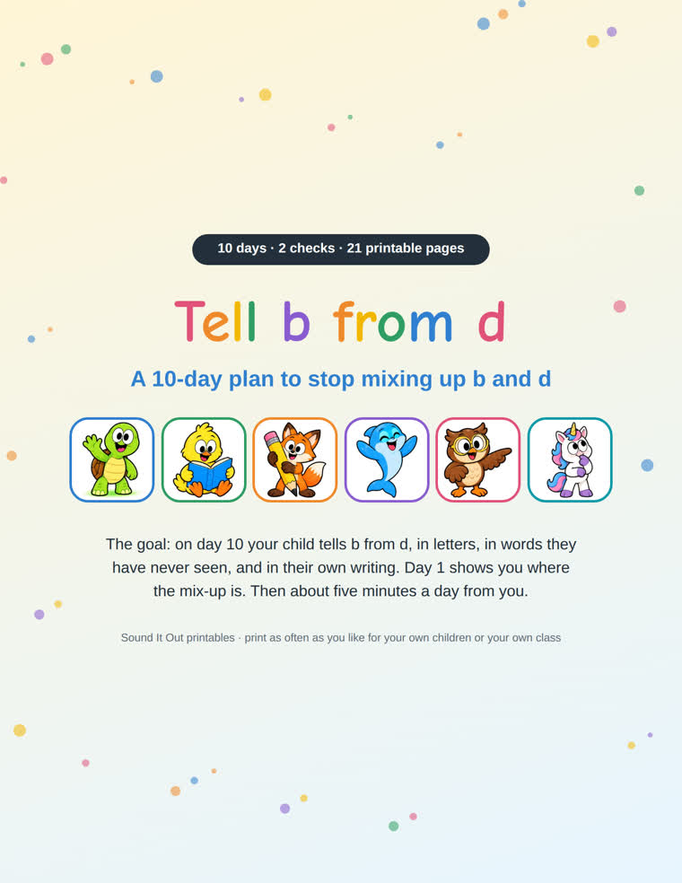
“Mixes up b and d”Tell b from d21 pages · 11 videos · 3 sound tracks · $19 onceSee the plan →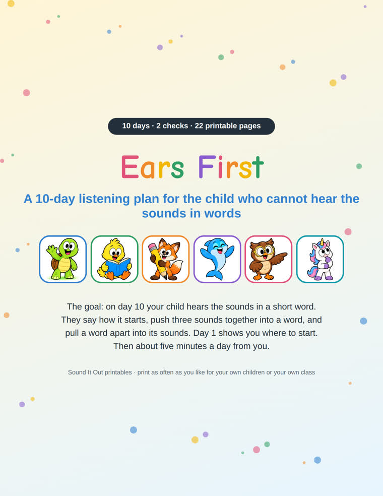
“Cannot tell me the first sound of a word, or cannot rhyme”Ears First22 pages · 11 videos · 2 sound tracks · $19 onceSee the plan →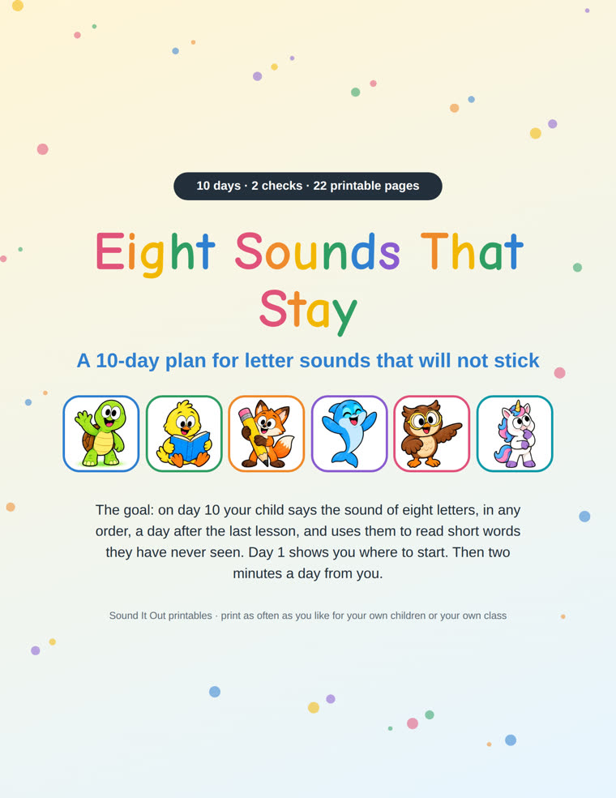
“Does not know the letter sounds, or learns them and forgets them”Eight Sounds That Stay22 pages · 11 videos · 3 sound tracks · $19 onceSee the plan →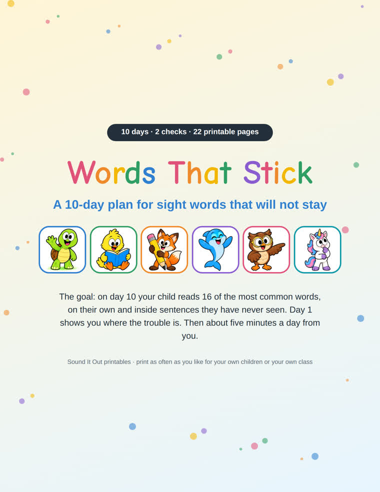
“Cannot remember common words like the, said and was”Words That Stick22 pages · 11 videos · 4 sound tracks · $19 onceSee the plan → “Reads slowly, one word at a time, or sounds out every word”Smooth Reading21 pages · 11 videos · 3 sound tracks · $19 onceSee the plan →
“Reads slowly, one word at a time, or sounds out every word”Smooth Reading21 pages · 11 videos · 3 sound tracks · $19 onceSee the plan →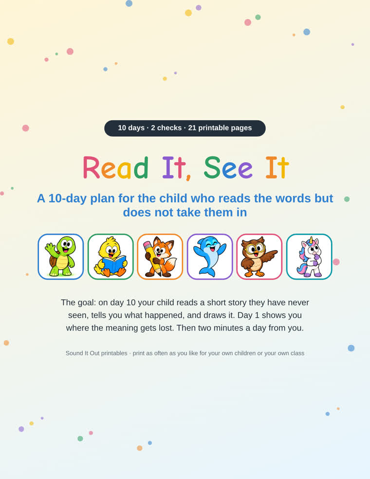
“Reads the words but cannot tell me what it said”Read It, See It21 pages · 11 videos · 4 sound tracks · $19 onceSee the plan →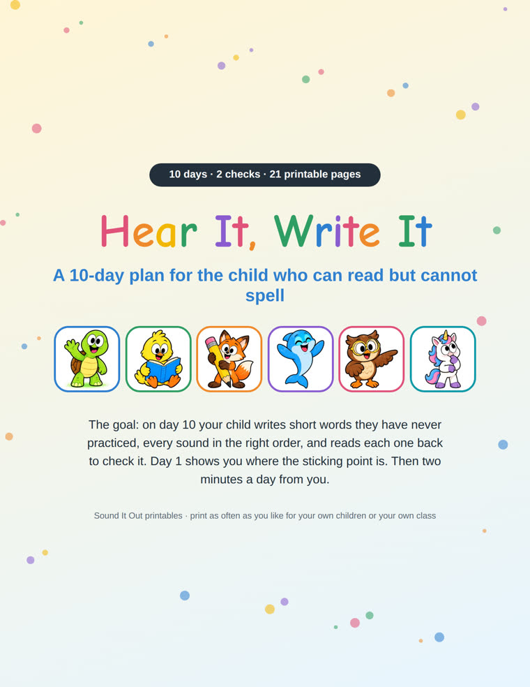
“Can read simple words but cannot spell them”Hear It, Write It21 pages · 11 videos · 3 sound tracks · $19 onceSee the plan →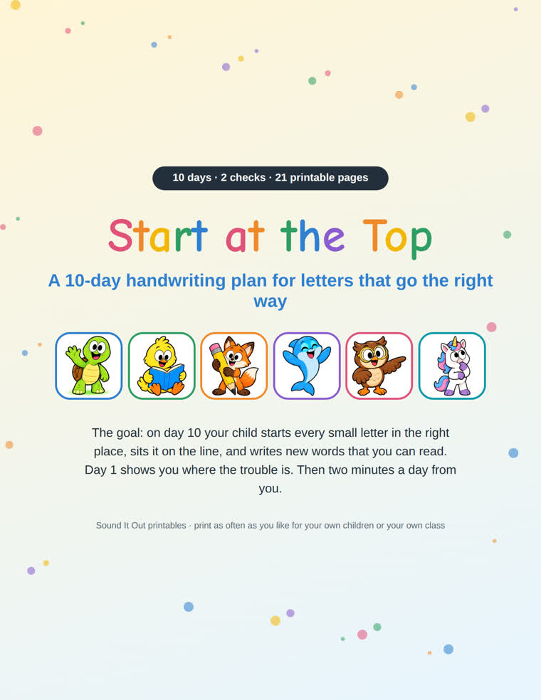
“Letters are messy, start in the wrong place or face the wrong way”Start at the Top21 pages · 11 videos · 3 sound tracks · $19 onceSee the plan →From the plan From Sounds to Words. Every plan starts the same way.
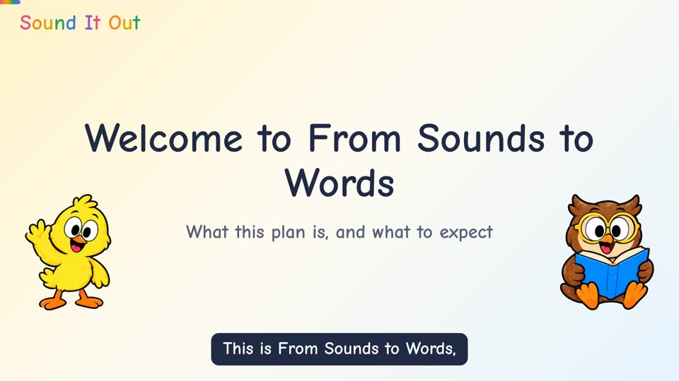
1. Watch a one-minute videoIt shows you what to do before you do it. 2. Do the three-minute check togetherYou listen and mark the page. No teaching yet.
2. Do the three-minute check togetherYou listen and mark the page. No teaching yet.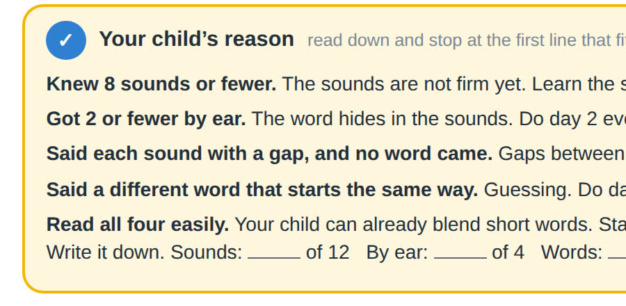
3. Read your resultThe box at the bottom of the page. It points to the likely reason, and to the days that work on it.Tap a picture to see it large.

 Level finder
Level finder Reading app
Reading app Reading games
Reading games Free pages🔎3-minute checks
Free pages🔎3-minute checksRight for a child who is moving along and needs practice.
Find where to start →Right for a child who has practiced and is still stuck. 30-day money back.
Choose a 10-day plan →Short games that follow the same seven levels: listen and say the word, read the word, word chains, build the word, sentences and a story. Every word uses only the sounds your child has been taught.
Short, step by step lessons for parents. Watch one, then try it with your child.
I built a free reading app for my own daughter, who found blending hard. Most “easy” books use words a beginner has not been taught to read, so the child guesses. The reading pages here only use the letter-sounds of each step, and every word was checked. Try the free reading app.
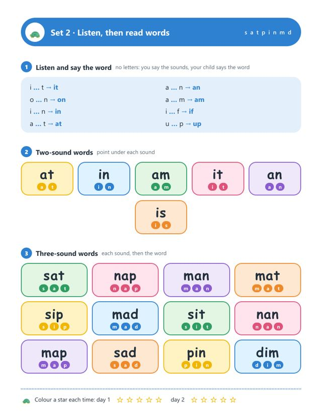
 Reading Path · Level 2
Reading Path · Level 2Free printable CVC words, sentences and stories.
Get it free FREE
A to Z letter tracing worksheets with beginning sounds.
Get the free pages FREE
Number tracing and counting worksheets with ten frames.
Get the free pagesReady-made practice pages in color and in black and white, in US Letter and A4.
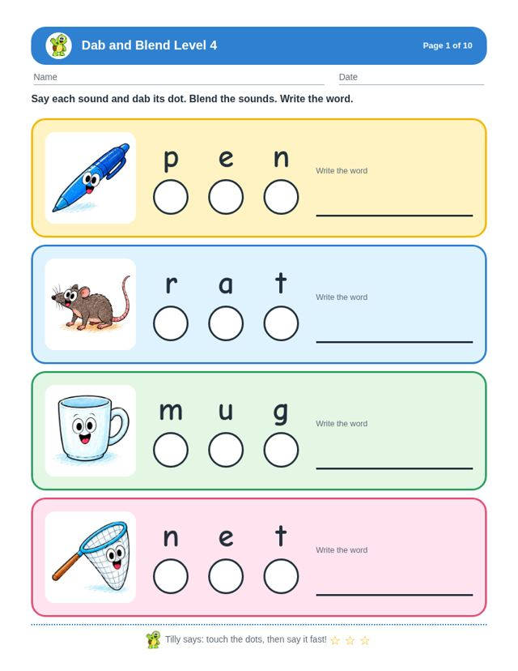
All 4 dab and blend level worksheet packs in one download.
See inside $3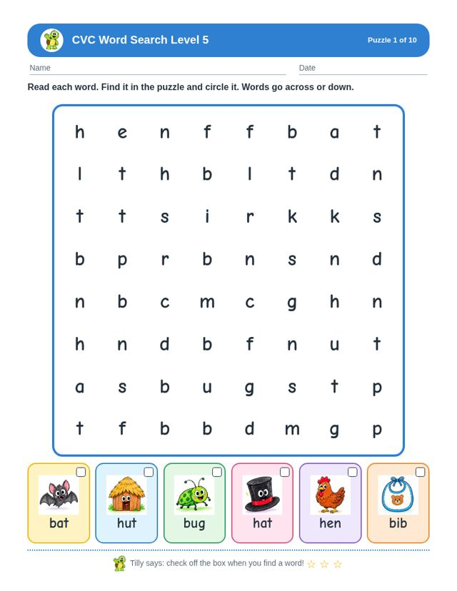
All 4 cvc word search level worksheet packs in one download.
See inside $1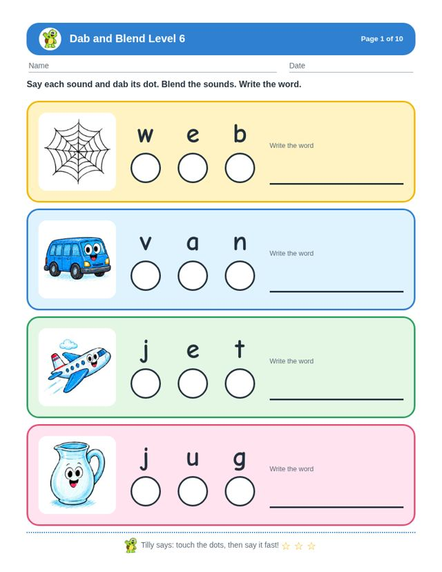
Dab and blend worksheets: dot the sounds, read the word, Reading Path Level 6.
See inside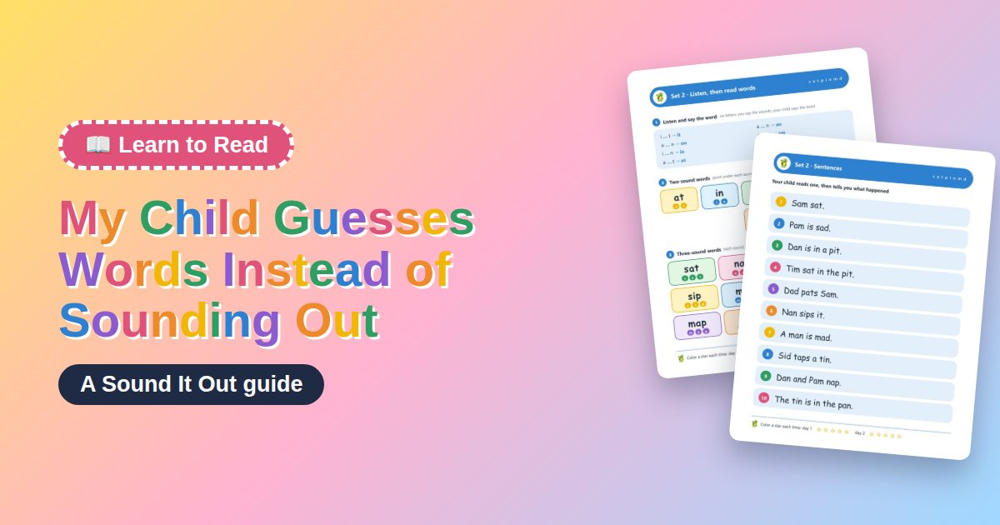
Learn to ReadMy Child Guesses Words Instead of Sounding OutLearn why kids guess at words instead of sounding them out, and get four simple steps, with example words, to build real sounding-out skills.Read the guide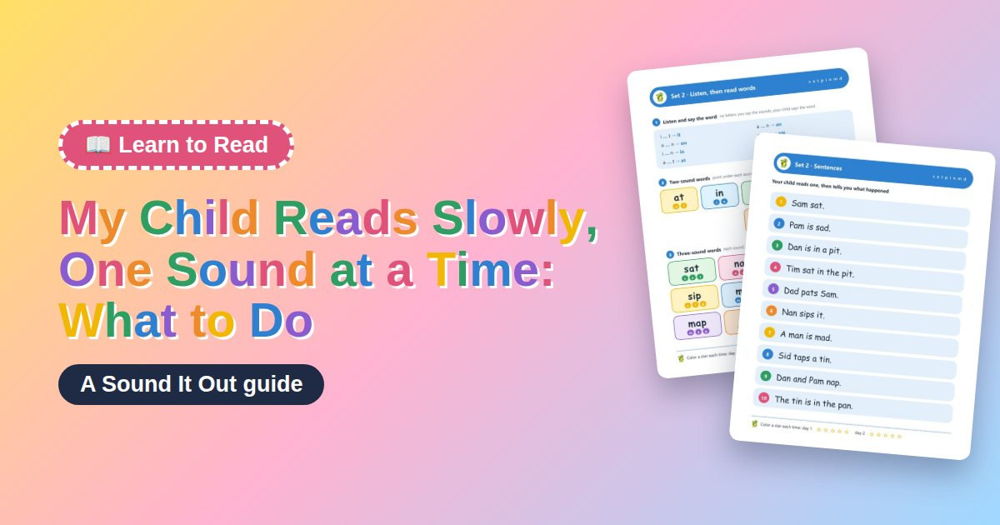
Learn to ReadMy Child Reads Slowly, One Sound at a Time: What to DoLearn why your child reads one sound at a time instead of smoothly, and simple steps to make reading smoother, with no timing.Read the guide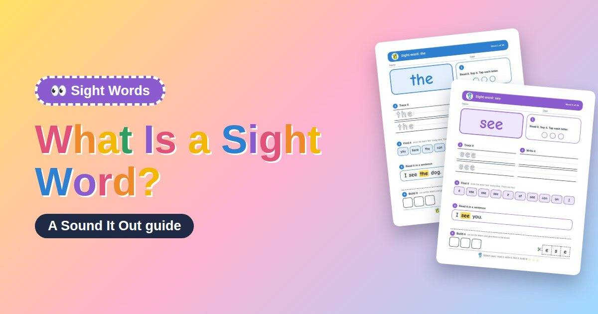
 Sight WordsWhat Is a Sight Word?Learn what a sight word is, why a few common words do not fully follow the sounds, and simple steps to teach them without guessing.Read the guide
Sight WordsWhat Is a Sight Word?Learn what a sight word is, why a few common words do not fully follow the sounds, and simple steps to teach them without guessing.Read the guide